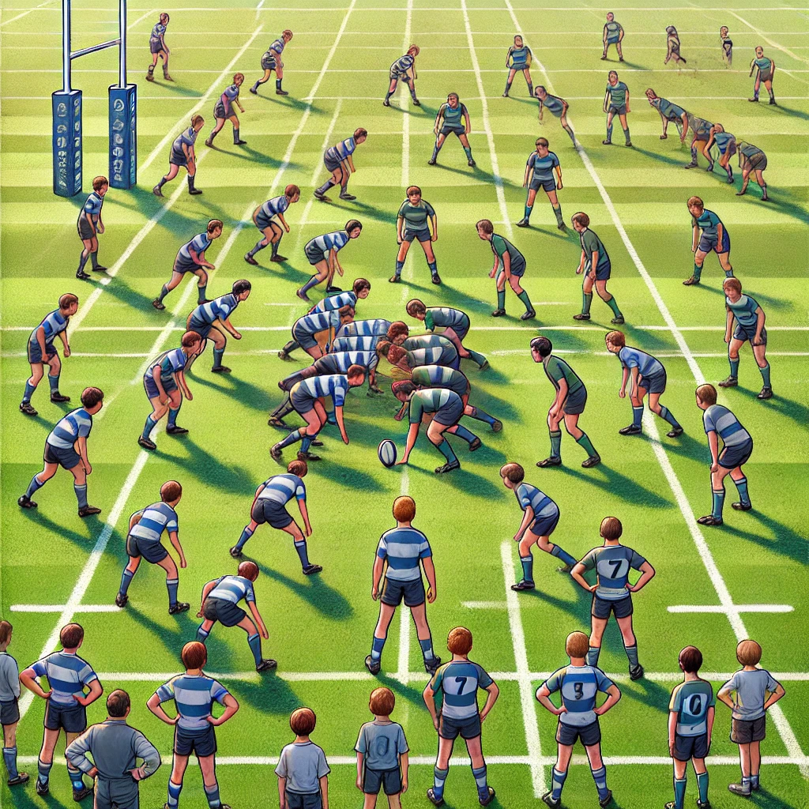
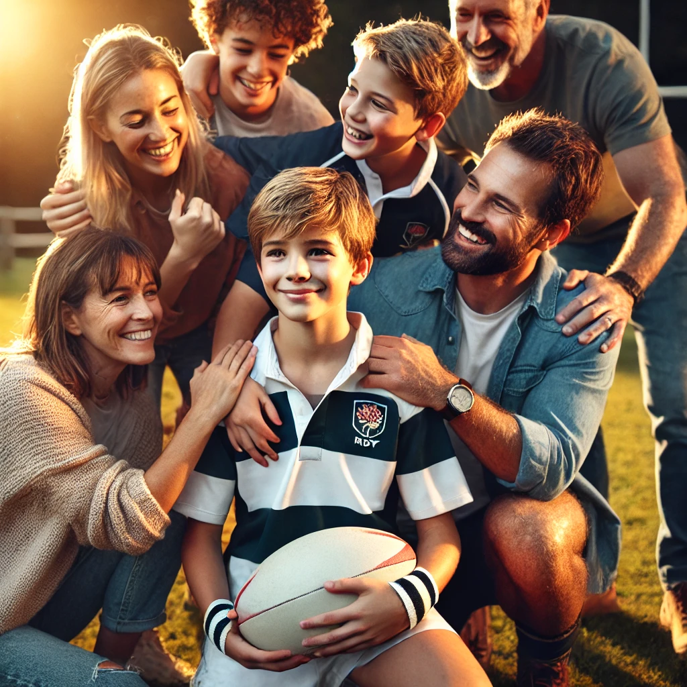
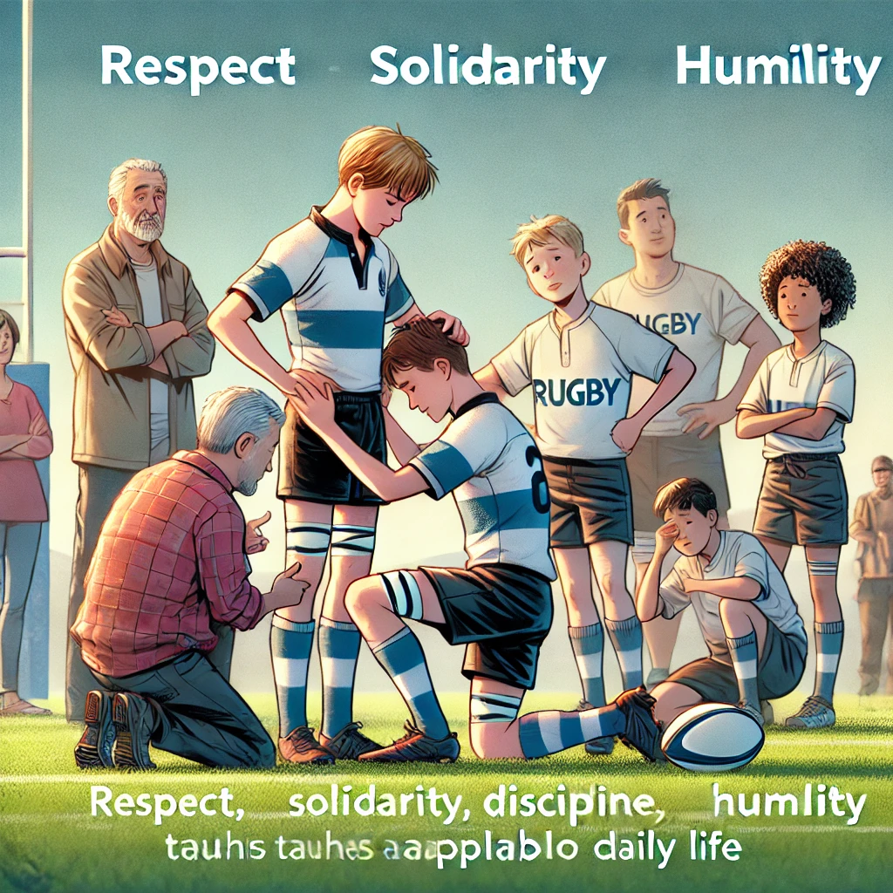
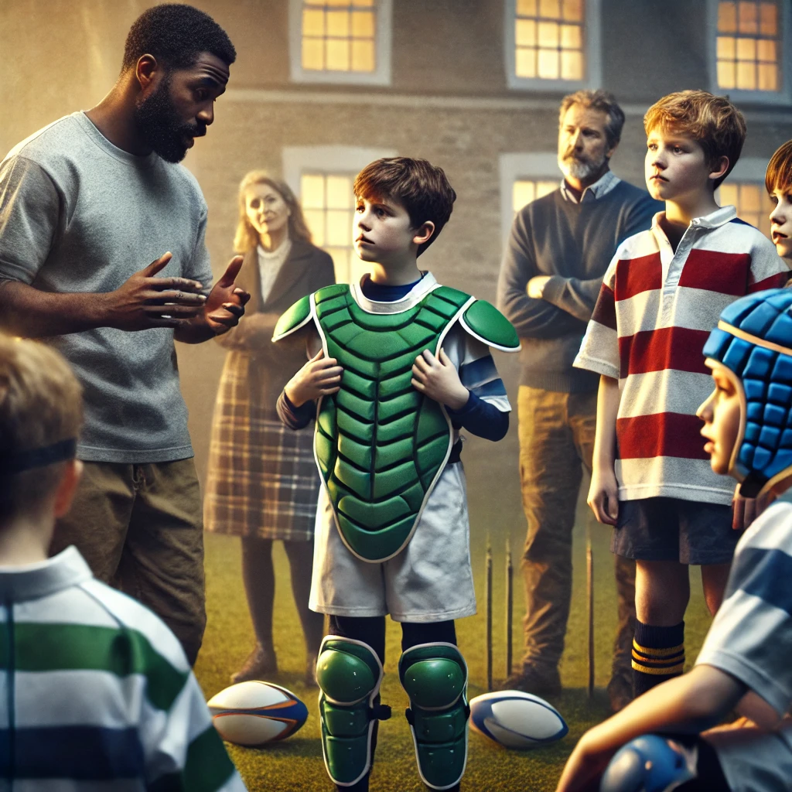
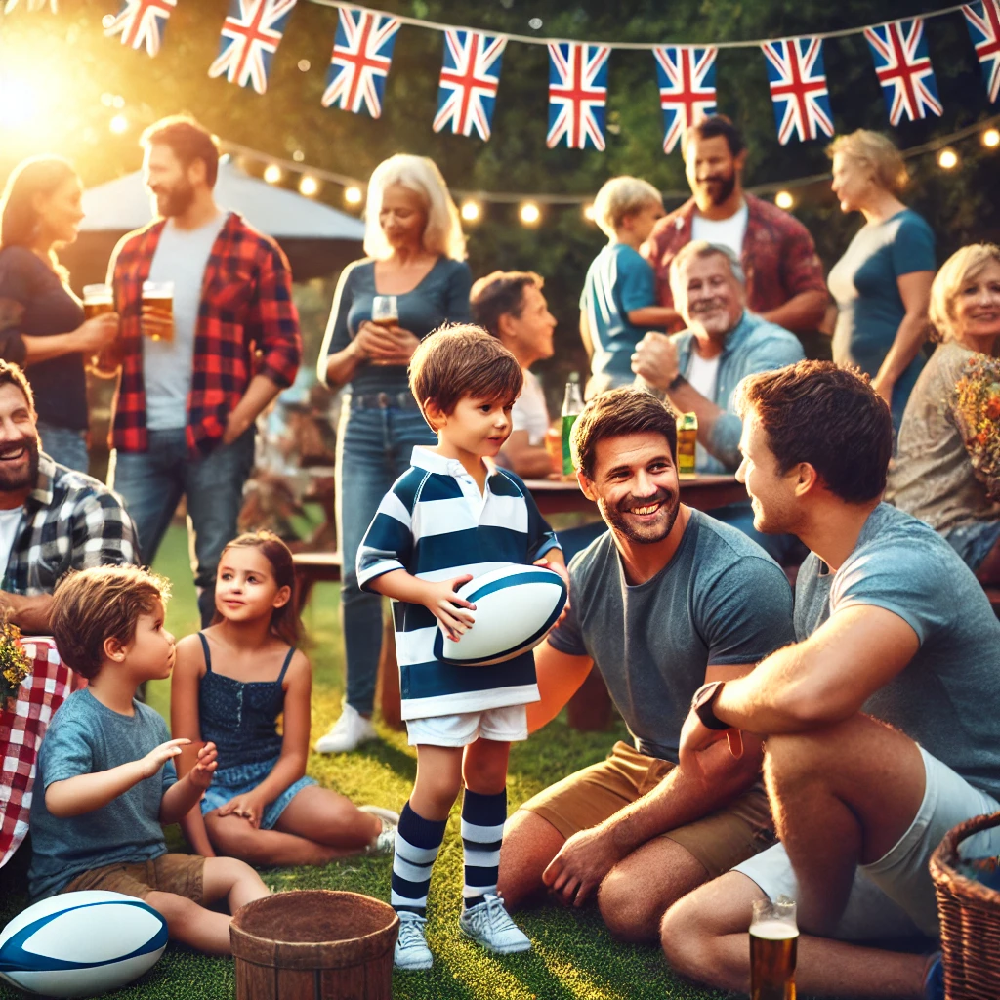
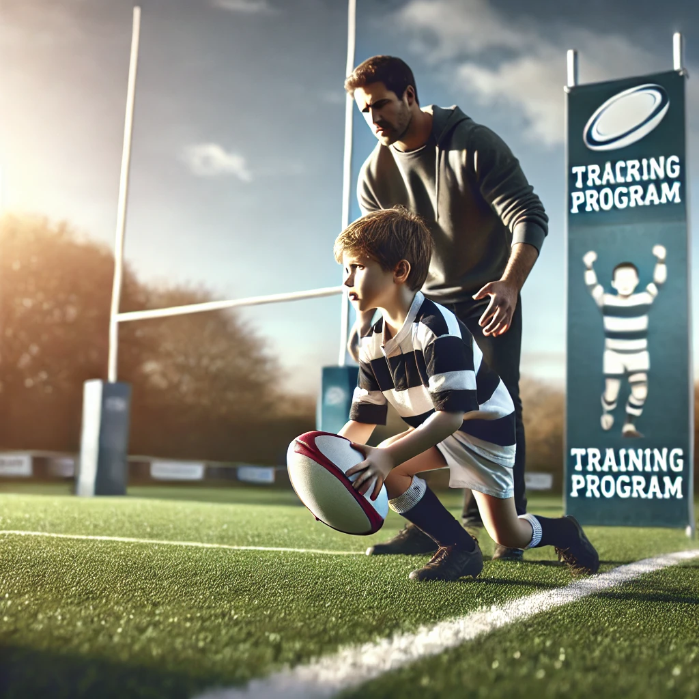

Pour l'enfant
Esprit d’équipe renforcé : Le rugby valorise encore plus l’importance du collectif, où chaque joueur est essentiel pour le succès du groupe, quel que soit son poste.

Diversité des rôles : Au rugby, il existe une grande variété de postes pour différents profils physiques, ce qui permet à chacun de trouver sa place, quel que soit son gabarit.
Développement physique complet : Le rugby fait appel à une large palette de compétences physiques (force, endurance, agilité, vitesse), ce qui aide au développement global du corps.

Ambiance familiale : Contrairement à l’image parfois compétitive du football, le rugby est souvent perçu comme un sport où règne le respect des autres et des règles, créant une ambiance plus conviviale.

Découverte d’un nouveau défi : Si l’enfant veut faire du football, essayer un sport différent peut être une aventure stimulante, lui permettant de découvrir de nouvelles compétences et un autre univers.
Pour le père

Valeurs du rugby : Le rugby enseigne des valeurs essentielles comme le respect, la solidarité, la discipline et l’humilité, des qualités souvent valorisées dans la vie quotidienne.

Sécurité et encadrement : Contrairement aux idées reçues, le rugby est très encadré avec des règles strictes pour assurer la sécurité des jeunes joueurs, notamment avec la formation des entraîneurs.
Moins de pression médiatique : Le football peut souvent exposer les enfants à une pression importante à cause de sa popularité, tandis que le rugby offre un environnement plus serein et orienté vers le plaisir du jeu.

Intégration sociale : Le rugby crée une forte cohésion sociale entre les parents et les enfants à travers les événements organisés autour du club (tournois, rencontres), favorisant l’intégration familiale.

Perspective d’évolution : Les filières de formation en rugby sont souvent moins saturées que celles du football, offrant des opportunités intéressantes à long terme pour un jeune joueur talentueux.